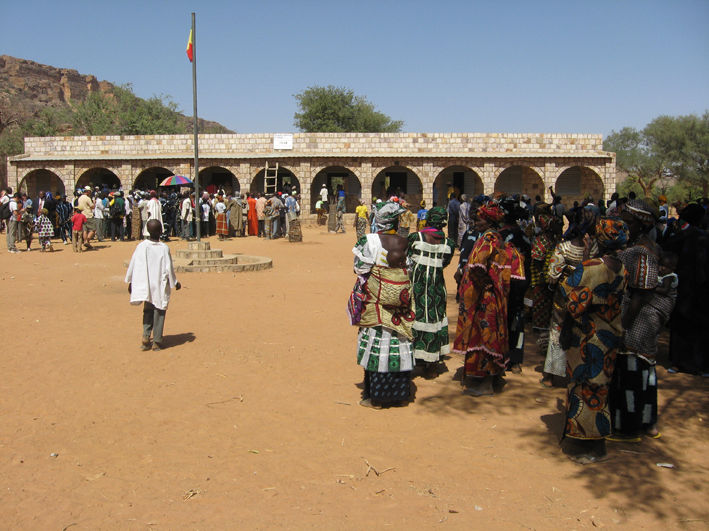

La costruzione della scuola, il mantenimento della didattica e le attivita' in area piemontese
L'importanza della scuola

Inaugurazione della scuola Mauro Pons a Yendouma
Gli insegnanti forniti dallo stato nella scuola elementare di Yendouma sono solo due (per circa 300 alunni - 50 x 6 classi) di cui uno svolge mansioni di direttore. Tale numero è insufficiente per la didattica; lo stesso problema c’è anche nei due villaggi vicini Ato e Tuogou.
L’Associazione ORUAM provvede ogni anno a finanziare la retribuzione di 6 insegnanti aggiuntivi. I Bambini/ragazzi non dispongono di materiale didattico: quaderni, penne, matite, etc. Ogni anno i direttori delle scuole ci inviano elenchi relativi al materiale necessario per lo svolgimento delle lezioni che cerchiamo di soddisfare mendiante l’acquisto diretto in loco.
Questi interventi sono sostenuti, da alcuni anni, dal contributo dell’ “8 per mille” della Chiesa Valdese, cui accediamo con progetti annuali. I villaggi e le scuole vivono un sostanziale e profondo isolamento dovuti sia all’estrema poverta’ sia alla collocazione geografica, sia alla mancanza di energia elettrica.
O.R.U.A.M ha posto in atto da subito uno scambio epistolare fra gli allievi Dogon e quelli delle nostre scuole. Esiste un vero e proprio gemellaggio scolastico fra le scuole di Yendouma e l’Istituto comprensivo Caffaro di Bricherasio.
Created with Mobirise site template